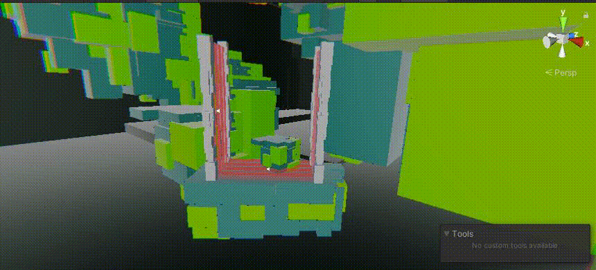

SOLAR CAGE
- Game Designer, designed and concepted the game, along with collaborating with a team on art, sound and engineering.
- Level Designer, created and iterated all the levels in the game, along with obstacle design and placement.
- Gameplay Designer/Programmer, programmed and designed an obstacle manager using event actions, designed the different enemy types, wrote an aiming system for the A.I, and other general gameplay components.
- Technical/Post Effects Artist, used the Shader Node Graph to create shaders in game, such as the sun, enemy bullet effects and more. Used VFX Graph for creating the particle effects in game. Used Unity's post processing effects for camera effects. Animated and worked with rig for shooting animation.
Solar Cage is an FPS parkour game in the distant future where humanity has almost fully converted themselves into machines. You play a janitor robot, that works in a dyson sphere facility around the sun. Suddenly one day you are contacted by an unknown force and given one objective only: BLOW UP THE SUN. The game is under current development for the summer and fall!
A total of 9 levels that has the player battle sentries along the way, jumping across platforms, wall running, sliding and dodging obstacles to make it to the end of each level. While as well uncovering the story through terminals and other secrets placed around each level.
Project Responsibilities:
DOWNLOAD LINK BELOW!
STEAM PAGEDevelopment visuals:


Under the Hood:

Enemy tracking was pretty important as the enemies in game were stationary, so to find a perfect balance, I made the bullets projectiles rather than hitscan/raycast, and the tracking accuracy changes how fast and how close the player is to the enemy. If the player was slow below a certain threshold, it’d predict the path the player is taking and shoot ahead just a bit, if they were at certain ranges, the accuracy would change accordingly (closer more accurate, far away less accurate.) This incentive would be to keep the player moving, while still being able to dodge around the bullets. The subtlety of how the enemy works could also be noticed by players who keep an eye out for it, allowing them to fight around this ability the enemies possess.
This is an example of some of the level layouts I did for the game for the finalized levels. I cross referenced some other parkour games and movement shooters whose approach to platforming would influence our own design, placement of enemies and obstacles. Having slopes that players can slider-surf on to gain speed, giving them about 3 different approaches using the floating walls to reach the end and placing enemies appropriately based on that approach was core to this specific beat.

An important tool I made in the game was an obstacle manager. Essentially this manager would allow us to make a variety of obstacles by just changing some values, making objects spawn or creating events. From something simple as a spinning laser obstacle as shown at the start to something a bit more complex, with a trigger attached to spawning a cage around the player and forcing them to fight inside it. I made the use of this manager easy to handle for quick iterations.